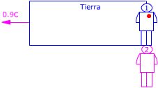

b) El rectángulo representa un recinto que se mueve respecto al observador 2 (Piloto) con velocidad 0.9c. El observador 1 (Controlador) y su corazón están dentro del recinto  Observador 1 (Controlador): Observador 2 (Piloto) Aplicando la conversión de tiempos resulta: $$\begin{aligned} &\Delta t_2=\frac{\Delta t_1}{\gamma}\\[6pt] &\gamma=\sqrt{1-\left(\frac{v}{c}\right)^{2}}=\sqrt{1-\left(\frac{0{,}9\,c}{c}\right)^{2}}=\sqrt{0{,}19}\\[6pt] &\Delta t_2=\frac{1}{\sqrt{0{,}19}}=2{,}29\ \mathrm{s} \end{aligned}$$ Para el piloto el latido del corazon del controlador dura más de lo que dura para este último. O sea: en el avión el tiempo transcurre más despacio que en tierra Oigo tus quejas: en el apartado anterior habíamos obtenido que el tiempo va más despacio en el avión y ahora resulta que el tiempo va más lento en tierra ¿en qué quedamos? El tiempo va más lento en todo
sistema que se mueva con respecto al observador. |